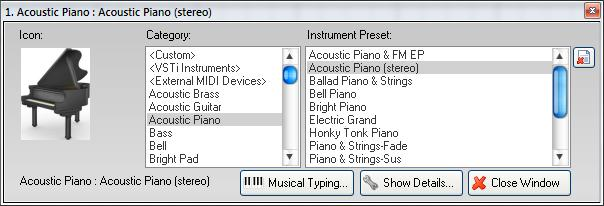
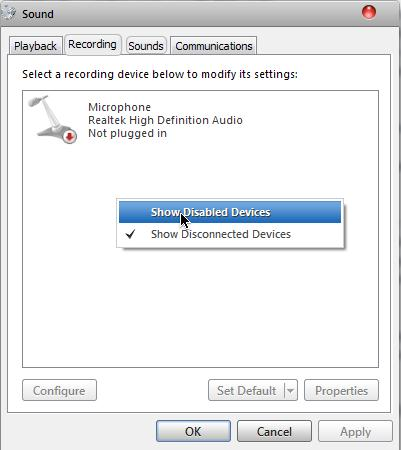

Musical Composition
Article by Mason Muszynski
Learn the process of composing your own music with virtual instruments in the trial version of mixcraft 5.
What You’ll Need
- A Trial of Mixcraft 5 (Download)
- Audacity (Download)
- A Keyboard for Typing
- An Idea for a song in mind
Preparing
Let’s Start of by preparing everything.
1. First, download the Mixcraft 5 trial from above, and install. Then open the program up. You should get a screen like this:
2. Select ‘Build Virtual Instrument Tracks’, and then click on the small piano.
3. Then a small window should pop up with tons of instrument categories and instruments in those categories.
4. Then click on the “Musical Typing…” button, and then a piano should pop up with letters on each note. Each letter represents a key on the piano. Play around and listen to the sounds that each instrument plays. Once you’ve found the instrument you like, move onto the next step. For the next step, I’ll be using a basic piano.
Composing Your Music
Now That you have everything prepared, We’ll start learning how to actually record our music.
1. Once you’ve found the instrument you like, start practicing and playing. Experiment with the instrument settings, such as the velocity, Pitchbend, and octave levels.
2. Now try and find a rhythm, beat, or chord you like. Start off simple, and then We’ll move onto more complicated things. I’ll start off by practicing “Mary Had a Little Lamb.”
3. Practice. Practice. Practice. It makes perfect, so just keep on practicing that rhythm you have until it sound just about right.
4. Once you’re ready, press the record button. Your track will become red and start to play: but don’t jump right into playing. Wait a couple of measures so you get the groove of your song. Don’t worry about the blank measures, you can edit those out after. Here’s how the track will look:
5. Once you’ve finished your song, hold the last chord for a while, then stop recording. You can fade in/out the music (right click and select fade in/out). If you wish to edit out the beginning, click and drag the start to the appropriate place you want.
6. Now you’ll probably want another instrument to go along with your song. Go to your first instrument layer, and de-select the ‘Arm’ button.
7. Now Close all of those small tabs that popped up when you clicked the piano button in step 2 of the preparing section, and click the small piano button in the second instrument layer. Continue to choose your instrument, and play a second recording.
8. Then you might want a third instrument, but this pops up:
9. That is an audio track, but you want a virtual instrument track. Simply select the third track, and go ‘Track > Insert Track > Virtual Instrument Track’. This will add another virtual instrument track. A good song will usually have up to eight virtual instrument tracks, so add as many as you want, and repeat all of the steps above.
Exporting Your Music
Once you’ve finished your song, you’ll want to export it as a .mp3 or a .wav file.
- Simply go ‘File > Mix down to > [.mp3 or .wav]
- Save it to a destination folder where it is easily located, and name it.
What to do when your trial is up
The Mixcraft 5 trial will only last you a full 14 days once you start it for the first time. Once this trial is up, you’ll be able to use all of the features of the program except for exporting. If you cannot export, it is impossible to make it an audio file. After the 14 day trial, this will pop up after every time you open mixcraft:
You must buy the program to get the full features of exporting. The only other Legal way of exporting is using Audacity, and I will show you how. I’m not sure if this will work on Windows XP, but it will on Vista and 7.
1. Right click on the audio icon on your taskbar and select ‘Recording Devices’. Right Click in the empty space, and select ‘show disabled devices’
2. ‘Stereo Mix’ will pop up, right click on that and select ‘enable’ Press Apply and Okay.
3. Load up Audacity, and go Edit > Preferences. Have it set up like so:
4. Click Okay, and proceed onto the next step.
5. Click the Audacity Record button first, then click the Mixcraft Play button. Wait for your entire song to play through then stop both. As you can see, Audacity recorded what was heard on the computer which was the music playing. Make sure there was no other noise.
6. In Audacity, Adjust the Volume if the music is too quiet/loud.
7. Then go File > Export as Mp3 or Wav.
8. Save it where you can easily find it, and close out all programs.
Congratulations, You have successfully created a song, and now know the process. Happy Compositing!